Brotato
Frantic arena fights, a ridiculous pile of weapons, and that “one more run” pull.
a story from the sketchbook…
How a UX designer and dad from the UK finally made the game he’d always wanted to make, one evening at a time.
scroll for the story ↓

chapter one
I’ve been a designer ever since I finished university, and these days I work full time as a UX designer, making apps and websites easier to use.
But there’s one thing I’ve wanted to do for as long as I can remember: make a proper game. Not a half-finished prototype sitting in a folder, but a real one, finished and launched on Steam.
SCRAPHEAD is that game. It’s been built in the gaps between a full-time job and being a dad: evenings, weekends, and whatever time is left once bedtime is done.
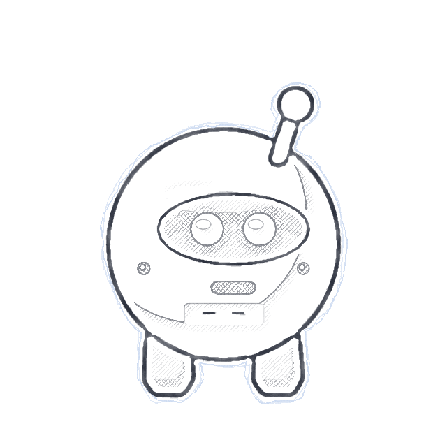
Day job: UX designer.
Night shift: robot wrangler.
chapter two
Every game is built on the games its maker loves, and SCRAPHEAD wears its inspirations proudly. Two in particular have eaten more of my evenings than I’d like to admit.
Frantic arena fights, a ridiculous pile of weapons, and that “one more run” pull.
A branching map where every path is a choice and every run tells its own story.

What if they had a scrappy little robot?
The idea was simple: take the arena chaos I love from one, the pick-your-path map I love from the other, and give it a look and a sense of humour all of its own.
chapter three
The robots, the hats, the aliens and the guns are all designed by me. The rules were simple: big friendly shapes and thick outlines, so everything is easy to read even when the screen fills up with aliens. Oh, and the legs had to be short and stubby. That one was non-negotiable.
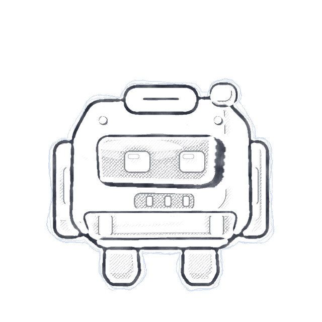
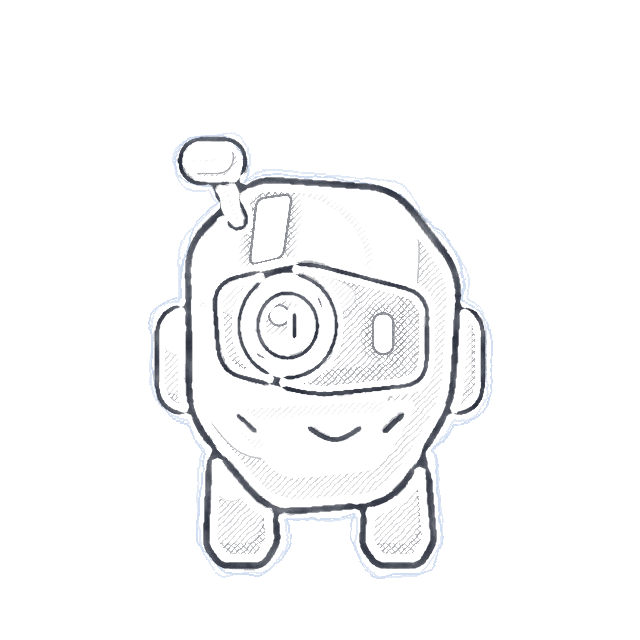
stubby legs only! ↙
hats. obviously.
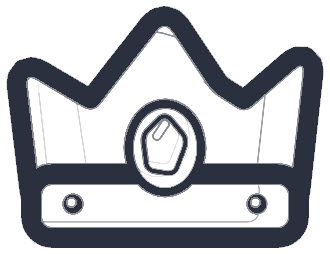
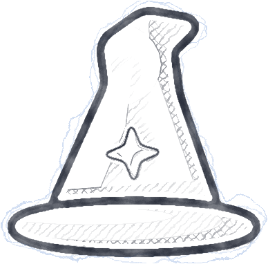
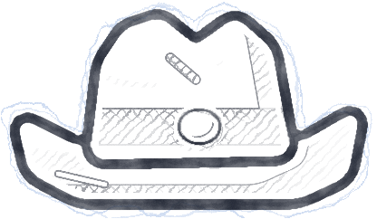
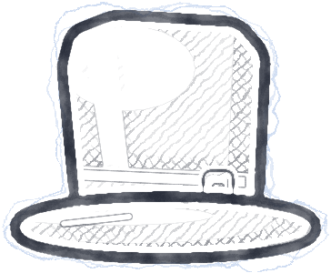
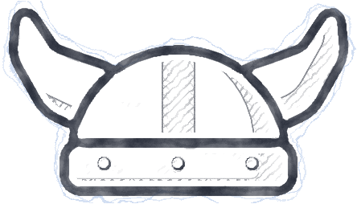
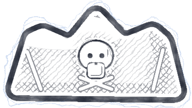
the Swarm
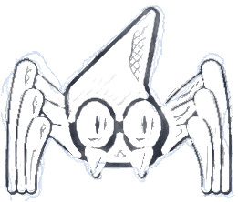
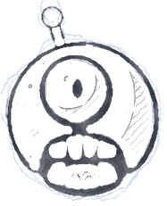
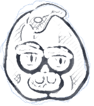
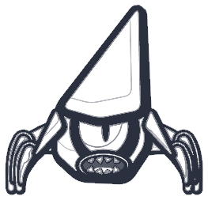
things that go bang
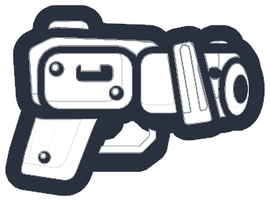
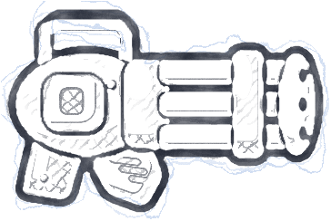
chapter four
Before any of it looked good, it had to feel good. The core loop came first: fight, grab the scrap, pick your path, gear up, and go again.
My day job is all about making things easy to understand, and that’s shaped SCRAPHEAD too, from the menus to how clearly a fight reads on screen.
Then came the long bit: playing it, hating bits of it, fixing them, and playing again. Every robot, hat and shop in the game has been through that loop more times than I can count.
chapter five
I want to be upfront about this: I use AI to help with the coding. Code is the part I’m honestly not amazing at, and AI helps me turn my designs into a working game far faster than I could on my own.
Everything else is mine. The art, the characters, the concepts, the mechanics and the balancing all come from me, and every idea gets played, poked and broken by real people before it ships. AI is a tool in the toolbox. The ideas and the decisions come from a person who loves games.
the bit I’m not amazing at
chapter six
Most evenings end the same way: a few friends, a co-op session, and a list of everything that broke. They’re brutally honest, and SCRAPHEAD is a much better game because of it.
Bug testing with friends is honestly one of my favourite parts. Nothing finds a bug faster than a mate trying to break your game on purpose.

Find it.
Laugh at it.
Fix it.
chapter seven (still being written)
Launching on Steam isn’t the finish line, it’s the start. I’m committed to making SCRAPHEAD better over time, and I want to do it with the people who play it: listening to feedback, fixing what breaks, and improving the game run by run.
If you play it, tell me what you love, what you don’t, and what broke. I’ll be listening.
Thanks for reading. See you in the Scrapyard.
— the dad behind Mangosphere